Vídeo 1
Primeiro conteúdo audiovisual.
Assistir no YouTube ↗Arquitetura e ação dos psicofármacos em um guia visual integrado, com conteúdo didático e apresentação clara.
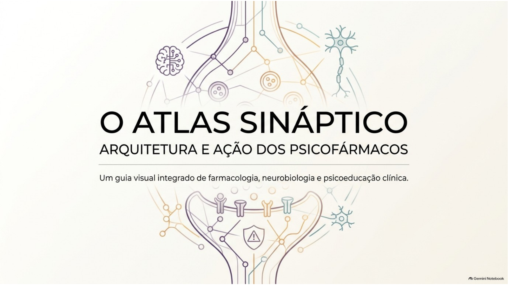
Explore todos os slides do Atlas Sináptico.
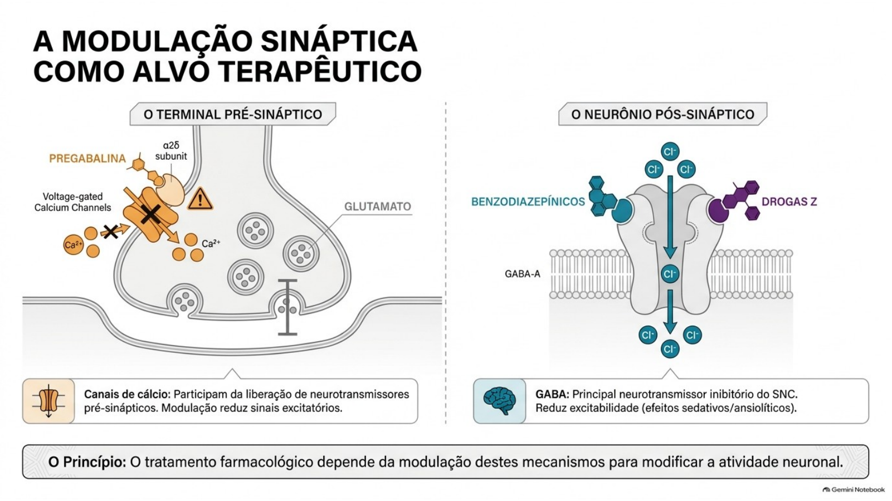
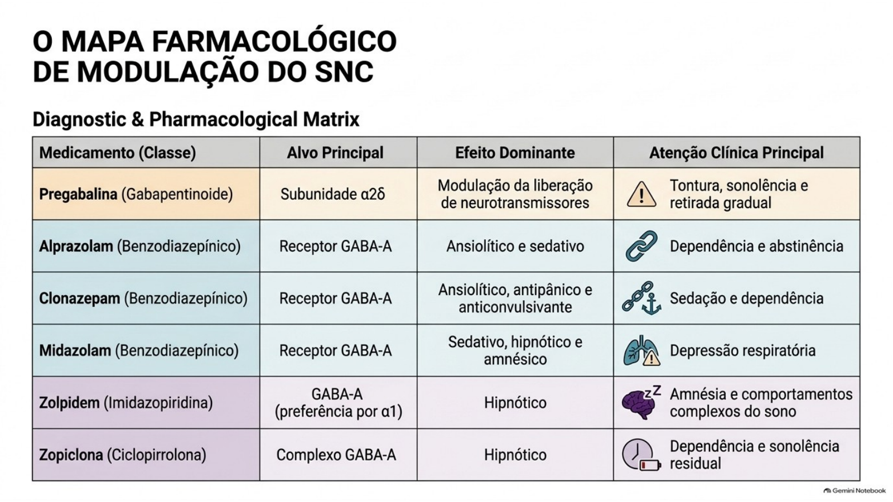
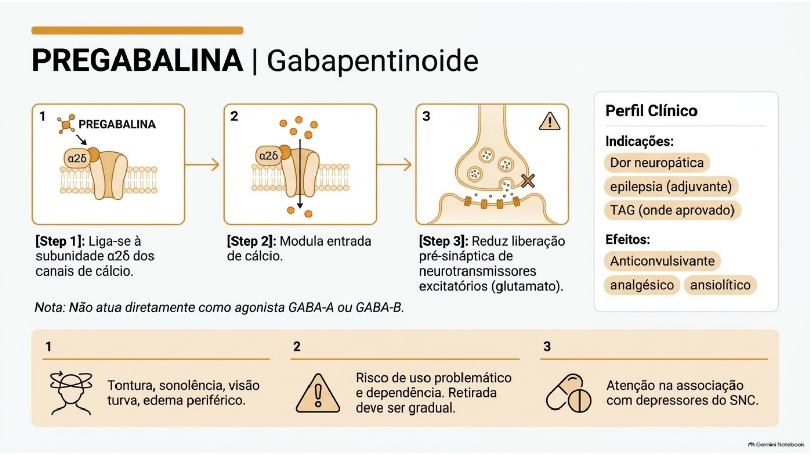
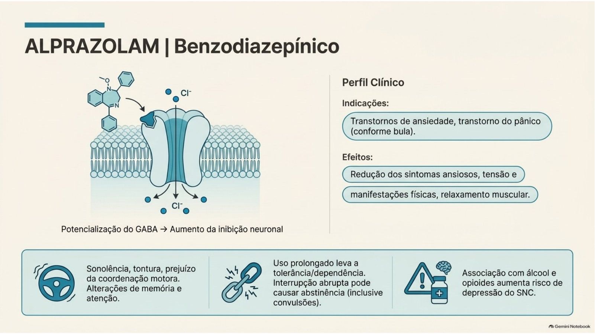
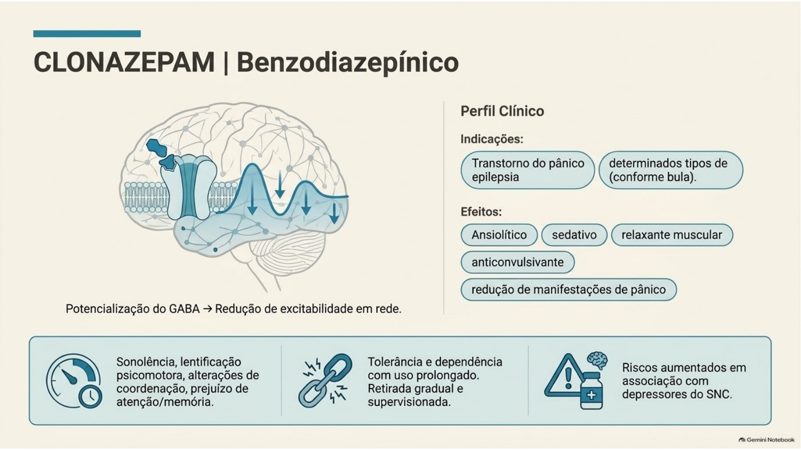
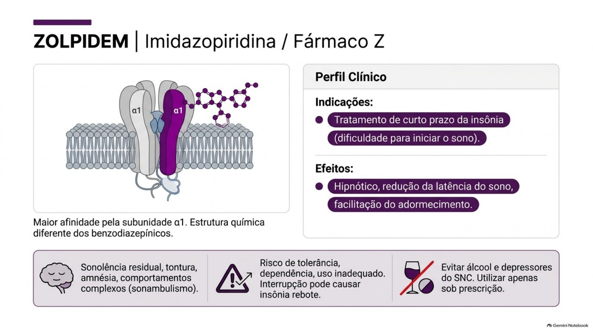
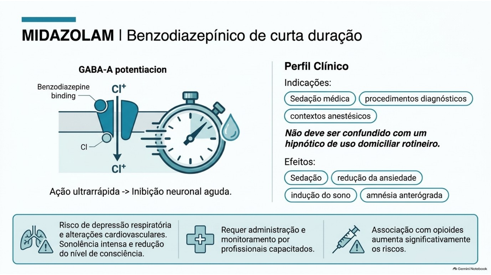
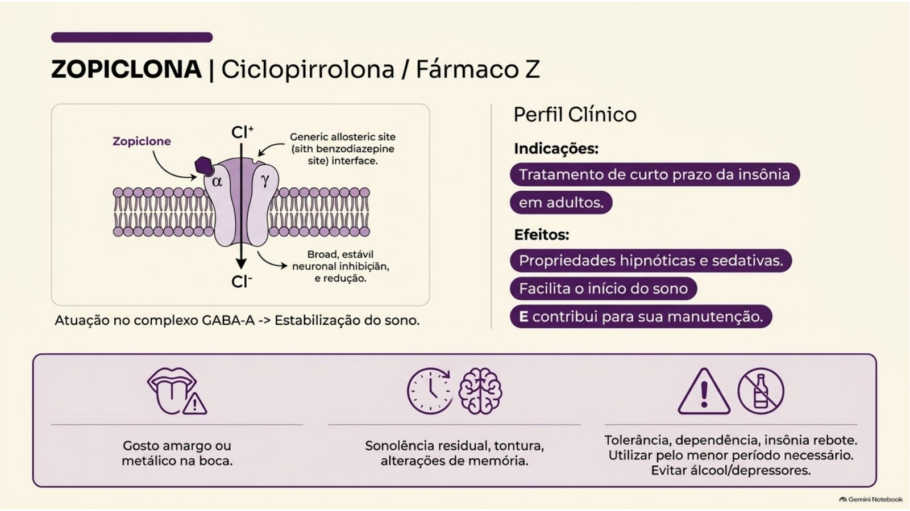
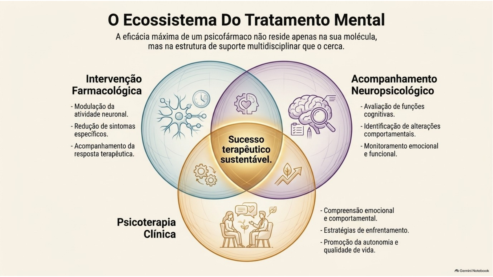
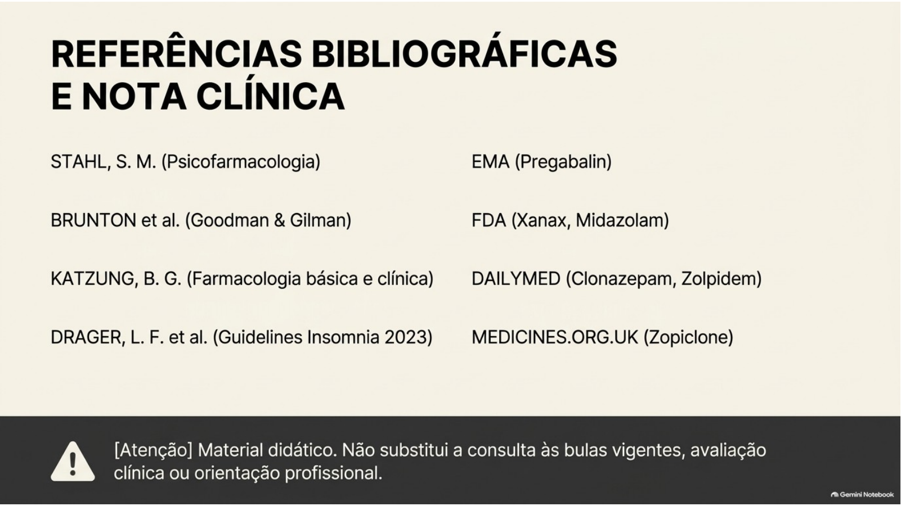
Aprofunde seus conhecimentos com nossas aulas e apresentações.
Primeiro conteúdo audiovisual.
Assistir no YouTube ↗Segundo conteúdo audiovisual.
Assistir no YouTube ↗Terceiro conteúdo audiovisual.
Assistir no YouTube ↗Quarto conteúdo audiovisual.
Assistir no YouTube ↗Quinto conteúdo audiovisual.
Assistir no YouTube ↗